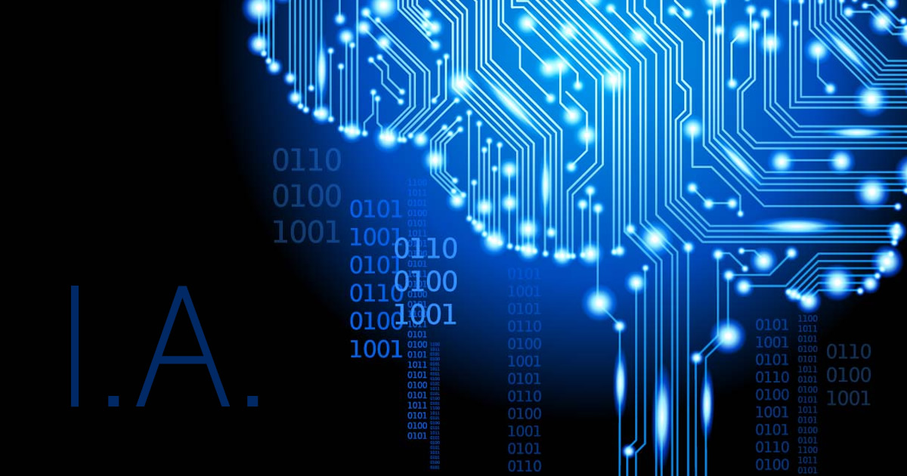
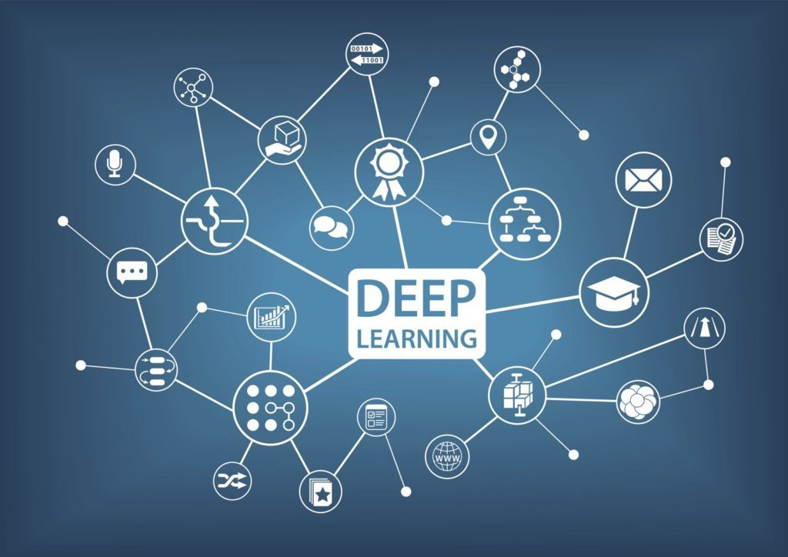

Complejidad que simplifica la realidad
La Inteligencia Artificial (IA) es la combinación de algoritmos planteados con el propósito de crear máquinas que presenten las mismas capacidades que el ser humano. Una tecnología que todavía nos resulta lejana y misteriosa, pero que desde hace unos años está presente en nuestro día a día a todas horas.
La IA está presente en la detección facial de los móviles, en los asistentes virtuales de voz como Siri de Apple, Alexa de Amazon o Cortana de Microsoft y está integrada en nuestros dispositivos cotidianos a través de bots (abreviatura de robots) o aplicaciones para móvil, tales como: LyliEnlace, un personal shopper en versión digital; ParlaEnlace, concebida para ayudarnos con el aprendizaje de idiomas; EmsEnlace, diseñada para hacernos un poco más llevadera la ardua tarea de encontrar nuevo piso; o GyantEnlace, un asistente virtual de Facebook que emite 'diagnósticos' médicos. El objetivo de todas ellas: hacer más fácil la vida de las personas.
Los avances en IA ya están impulsando el uso del big data debido a su habilidad para procesar ingentes cantidades de datos y proporcionar ventajas comunicacionales, comerciales y empresariales que la han llevado a posicionarse como la tecnología esencial de las próximas décadas. Transporte, educación, sanidad, cultura... ningún sector se resistirá a sus encantos.
Machine Learning como automatización de grandes procesos
Machine Learning es una disciplina científica del ámbito de la Inteligencia Artificial que crea sistemas que aprenden automáticamente. Aprender en este contexto quiere decir identificar patrones complejos en millones de datos. La máquina que realmente aprende es un algoritmo que revisa los datos y es capaz de predecir comportamientos futuros. Automáticamente, también en este contexto, implica que estos sistemas se mejoran de forma autónoma con el tiempo, sin intervención humana. Veamos cómo funciona.
Una empresa de telefonía quiere saber qué clientes están en “peligro” de darse de baja de sus servicios para hacer acciones comerciales que eviten que se vayan a la competencia. ¿Cómo puede hacerlo? La empresa tiene muchos datos de los clientes, muchísimos: antigüedad, planes contratados, consumo diario, llamadas mensuales al servicio de atención al cliente, últimos cambios de planes contratados… pero seguramente los usa solo para facturar y para hacer estadísticas. ¿Qué más puede hacer con esos datos? Se pueden usar para predecir cuándo un cliente se va a dar de baja y gestionar la mejor acción que lo evite. En pocas palabras, con Machine Learning se puede pasar de ser reactivos a ser proactivos. Los datos históricos del conjunto de los clientes, debidamente organizados y tratados en bloque, generan una base de datos que se puede explotar para predecir futuros comportamientos, favorecer aquellos que mejoran los objetivos de negocio y evitar aquellos que son perjudiciales.
Esa cantidad ingente de datos son imposibles de analizar por una persona para sacar conclusiones y menos todavía para hacer predicciones. Los algoritmos en cambio sí pueden detectar patrones de comportamiento contando con las variables que le proporcionamos y descubrir cuáles son las que han llevado, en este caso, a darse de baja como cliente.

“En definitiva, el ‘machine learning’ es un maestro del reconocimiento de patrones, y es capaz de convertir una muestra de datos en un programa informático capaz de extraer inferencias de nuevos conjuntos de datos para los que no ha sido entrenado previamente”. Esta capacidad de aprendizaje se emplea también para la mejora de motores de búsqueda, la robótica, el diagnóstico médico o incluso la detección del fraude en el uso de tarjetas de crédito.
Deep Learning
El Machine Learning, como se ha visto, se describe a menudo como un tipo de técnicas de Inteligencia Artificial donde las computadoras aprenden a hacer algo sin ser programadas para ello. Por poner un ejemplo sencillo, se podría programar un ordenador para identificar a un animal como un gato escribiendo un código que indique al programa que elija "gato" cuando se ve una imagen concreta de un gato. Esto funcionaría si el único gato con el que tratase el programa es el de esa imagen, pero no lo haría si el programa tuviera que ver un montón de imágenes de diferentes animales, incluyendo una gran cantidad de gatos, y tuviera que identificar cuáles de ellas representan a un gato.
Los programas de Machine Learning actuarían en ese segundo caso, para lo cual pueden entrenarse de diferentes maneras. En una de ellas al programa se le muestra una gran cantidad de imágenes de diferentes animales (etiquetadas con el nombre del animal correspondiente). El programa aprenderá que los animales que se parecen a los gatos se llaman "gato" sin haber sido programado para llamar "gato" a una imagen concreta de un gato. Para ello el programa debe aprender combinaciones de características visuales que tienden a aparecer juntas (por ejemplo, la forma de los cuerpos y de las caras), haciendo a los gatos visualmente diferentes de otros animales. El programa aprende a asociar esta combinación de características distintivas con la palabra "gato", proceso de aprendizaje conocido como “construcción de un modelo de un gato”.
Una vez que se ha construido el modelo de “gato”, un programa de Machine Learning prueba dicho modelo al tratar de identificar a los gatos en un conjunto de imágenes que no ha visto antes. El programa mide el éxito obtenido en la identificación de los nuevos gatos y utiliza esta información para ajustar el modelo, de forma que la próxima vez obtendrá mejores resultados. Es decir, el nuevo modelo se prueba, se evalúa su rendimiento, y se realiza otro ajuste. Este proceso iterativo continúa hasta que el programa haya construido un modelo que pueda identificar gatos con un alto nivel de precisión.

Redes Neuronales
Las redes neuronales son un modelo para encontrar esa combinación de parámetros y aplicarla al mismo tiempo. En el lenguaje propio, encontrar la combinación que mejor se ajusta es "entrenar" la red neuronal. Una red ya entrenada se puede usar luego para hacer predicciones o clasificaciones, es decir, para "aplicar" la combinación.Para entender bien cómo funciona esta red vamos a ir con un ejemplo. Supongamos que sois alumnos de una clase en la que el profesor no ha dicho exactamente cómo va a poner las notas. Para empezar, supongamos que sólo habéis hecho dos exámenes y tenéis la nota de cada uno de ellos y la final.¿Cómo usamos una red neuronal para saber cuánto vale cada examen? Aquí nos bastará con la unidad fundamental de la red neuronal: el perceptrón. Un perceptrón es un elemento que tiene varias entradas con un cierto peso cada una. Si la suma de esas entradas por cada peso es mayor que un determinado número, la salida del perceptrón es un uno. Si es menor, la salida es un cero.En nuestro ejemplo, las entradas serían las dos notas de los exámenes.
Si la salida es uno (esto es, la suma de las notas por su peso correspondiente es mayor que cinco), es un aprobado. Si es cero, suspenso. Los pesos son lo que tenemos que encontrar con el entrenamiento. En este caso, nuestro entrenamiento consistirá en empezar con dos pesos aleatorios (por ejemplo, 0.5 y 0.5, el mismo peso a cada examen) y ver qué resultado da la red neuronal para cada alumno. Si falla en algún caso, iremos ajustando los pesos poco a poco hasta que esté todo bien ajustado.Por ejemplo, si un alumno con muy buena nota en el segundo examen ha suspendido el curso, bajaremos el peso del segundo examen porque claramente no influye demasiado. Poco a poco acaberemos encontrando los pesos que se ajusten a las notas que puso el profesor. La idea del ajuste o retroalimentación es ir adaptando la red a la información "oculta" que tienen los datos que le pasamos para que aprenda, a continuación se muestra un infograma de como diseñar una red neural:
La inteligencia artificial como oportunidad
La inteligencia artificial ya está cambiando el mundo y las cifras son la mejor muestra de ello: la consultora estadounidense Gartner predice que para el año 2020 el 85% de la interacción con los clientes será gestionada por IA y, en conjunto, se estima que el mercado de la IA pueda llegar a representar 127.000 millones de dólares en 2025, cifra muy superior a los 2.000 millones de 2015. Estados Unidos y China se situarán a la cabeza en inversiones.
Y aunque haya voces como la del filósofo sueco de la Universidad de Oxford, Nick Bostrom, que anticipa que "existe un 90% de posibilidades de que entre 2075 y 2090 haya máquinas tan inteligentes como los humanos", o la de Stephen Hawking, que aventura que las máquinas superarán completamente a los humanos en menos de 100 años, lo cierto es que lejos de convertirnos en obsoletos, la IA nos hará más eficientes y nos permitirá ejecutar acciones que nunca hubiéramos podido realizar debido a su complejidad. ¿Te imaginas explorar partes del universo totalmente hostiles para el ser humano? Gracias a ella, un día será posible.
Principales usos
- Flotas de drones capaces de plantar mil millones de árboles al año para combatir la deforestación, vehículos submarinos no tripulados para detectar fugas en oleoductos, edificios inteligentes diseñados para reducir el consumo energético, etc.
- Plataformas específicas que, por medio de análisis predictivos, mejoran los rendimientos agrícolas y advierten de impactos ambientales adversos.
- Es útil a la hora de evitar colisiones o atascos y también para optimizar el tráfico. Tesla ha desarrollado un sistema gracias al cual, cuando uno de sus coches transita una ruta por primera vez, comparte la información con el resto.
- Posibilita hacer pronósticos de ventas y elegir el producto adecuado para recomendárselo al cliente. Empresas como Amazon utilizan robots para identificar si un libro tendrá o no éxito, incluso antes de su lanzamiento.
Otras funciones
- Ya existen chatbots que nos preguntan por nuestros síntomas para realizar un diagnóstico. La recolección de datos genera patrones que ayudan a identificar factores genéticos susceptibles de desarrollar una enfermedad.
- Las tecnologías inteligentes pueden ayudar a los bancos a detectar el fraude, predecir patrones del mercado y aconsejar operaciones a sus clientes.
- Chatbots interactivos que pueden sugerirnos productos, restaurantes, hoteles, servicios, espectáculos, según nuestro historial de búsquedas.
- Permite saber si un estudiante está a punto de cancelar su registro, sugerir nuevos cursos o crear ofertas personalizadas para optimizar el aprendizaje.